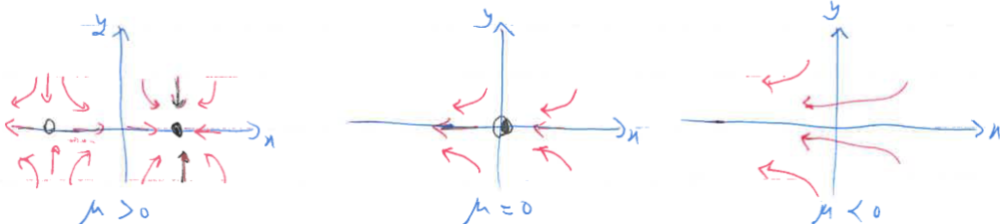

Bifurcations in 2D: Saddle-node, transcritical, pitchfork are found also in 2D with the new dimension just giving attraction or repulsion
The saddle-node bifurcation is the basic mechanism for the creation and destruction of fixed points. Example in 2D: \[ \dot{x} = \mu - x^2 \] \[ \dot{y} = -y \] In the \( x \)-direction we see the bifurcation behavior, while in the \( y \)-direction the motion is exponentially damped.
Consider the phase portrait as \( \mu \) varies. For \( \mu > 0 \), there are two fixed points, a stable node at \((x^*,y^*)=\boxed{(\sqrt{\mu},0)}\) and a saddle at \(\boxed{(- \sqrt{\mu},0)}\). As \( \mu \) decreases, the saddle and node approach each other, then collide when \( \mu = 0 \), and finally disappear when \( \mu < 0 \)

1Strogatz, S.H. (2015). Nonlinear Dynamics and Chaos: With Applications to Physics, Biology, Chemistry, and Engineering (2nd ed.). CRC Press.